第 27 章：数字钱包
原章节：Digital Wallet · 原项目路径
27. Digital Wallet/
本章导读
你在微信里给朋友转 100 块钱。你这边余额立刻少了 100，朋友那边余额立刻多了 100——整个过程不到一秒，而且不可能出现"我扣了钱、他没收到"这种情况。
这个"不可能"，就是本章的全部难点。
一个钱包看起来简单到不像一道系统设计题：两个账户，一加一减而已。但当你把这两个账户放到不同的服务器、不同的数据库上，还要一秒处理上百万笔转账时，"一加一减必须同时成功或同时失败"就变成了分布式系统里最棘手的问题之一。更麻烦的是，钱包是要审计的——三年后有人问"我在 2026 年 3 月 5 日 14:23 的余额是多少"，你必须能答出来，而且要能证明这个数字没被篡改过。
这一章会带你从零开始，走完一条完整的推理链：为什么一个本地数据库事务不够用？2PC、TC/C、Saga 分别在解决什么问题、代价是什么、什么时候该用哪个？为什么最后这套系统会用"事件溯源"把整个账本重建成一条不可篡改的事件流？
你将学到
- 为什么"跨库转账"没有本地事务可用，以及"只成功一半"会造成什么后果
- 两阶段提交（2PC）、三阶段提交（3PC）、TC/C（Try-Confirm/Cancel）、Saga 四种分布式事务方案的原理、代价与适用场景
- TC/C 的三种经典失败模式：Confirm 失败、空回滚、悬挂，以及如何用"阶段状态表"化解
- 幂等性为什么是分布式事务的生命线，以及不幂等会怎样重复扣款
- 事件溯源（Event Sourcing）如何把"余额"从一个可被覆盖的数字，变成一条只能追加的事件流
- CQRS 与快照（Snapshot）如何解决事件溯源的查询慢和重放贵两个问题
- 钱包的硬约束——余额不能为负——在并发下如何保证
- 钱包余额与银行流水如何对账
1. 需求澄清与量级估算
先问清楚边界
系统设计题的第一件事永远不是画架构图，而是问清楚要做什么。原文记录了一段面试官（I）和候选人（C）的对话，我们把关键结论提炼出来：
| 问题 | 结论 |
|---|---|
| 支持哪些操作？ | 只做钱包之间的转账 |
| 吞吐量要求？ | 假设 100 万 TPS（每秒百万笔交易） |
| 正确性怎么保证？ | 允许用事务保证；但光靠"对账"只能发现问题，不能给出根因 |
| 可重现性？ | 必须支持——要能从头重放数据、重建历史 |
| 可用性？ | 99.99% |
| 要不要考虑外汇？ | 不要，超出范围 |
其中有一条特别值得琢磨：面试官说"我们可以通过对账（reconciliation）来证明正确性，但对账只能发现差异，不能告诉你差异是怎么产生的。所以我们希望系统能从头重放数据、重建历史。"
这句话是整章的伏笔。它提前告诉你：最终的方案不会是普通的"余额表 + UPDATE"，而是一套可重放的事件系统。
量级估算（粗略估算 / Back-of-the-envelope）
原文给了一个关键假设：一个云上配置好的传统关系型数据库，大约能支撑 1000 TPS。
于是：
- 要扛 100 万 TPS，就需要
1,000,000 / 1,000 = 1,000个数据库节点。 - 但一笔转账有两条腿（two legs）——A 扣一次、C 加一次。所以系统实际要处理的是
100 万 × 2 = 200 万 TPS。
原文给了一张表，说明"提升单节点 TPS"能省掉多少节点：
| 单节点 TPS | 需要的节点数 |
|---|---|
| 100 | 20,000 |
| 1,000 | 2,000 |
| 10,000 | 200 |
这张表按 200 万 TPS 计算，我们验算一下：
2,000,000 / 100 = 20,000✓2,000,000 / 1,000 = 2,000✓2,000,000 / 10,000 = 200✓
数字是对的。这张表传达的核心信息是：单节点性能每提升一个数量级，集群规模就下降一个数量级。所以后面所有的性能优化，目标都是"让一台机器扛更多"，而不是"无脑加机器"——因为 2000 个数据库节点的运维成本、跨节点事务成本，都是灾难。
关于"1000 TPS"这个数字 这是原文给出的量级假设，不是精确基准。现代服务器上，一个简单的单行 UPDATE 事务跑到每秒几千甚至上万 TPS 是可能的；但钱包转账事务通常包含：多条记录更新、写 WAL、
fsync落盘、可能的同步复制确认——这些都会把 TPS 拉低到千级。所以"1000 TPS"作为一个保守的量级估算是站得住的，你不需要纠结它的绝对值。面试时如果被追问，你可以说："这个数取决于事务复杂度和持久化级别，我给的是一个保守量级。"
关于"100 万 TPS"这个目标 这个数字远超现实世界的支付峰值。真实的大型支付系统（比如电商大促的支付峰值）在几十万笔/秒的量级。原文设定 100 万 TPS 是为了把设计压力拉满，逼出"必须分片 + 必须分布式事务 + 必须优化单机性能"这一整套方案。理解这一点很重要：这是设计目标，不是行业参照。面试时你可以主动点破这一点，这反而是加分项。
2. 高层设计：从内存分片方案说起

API 设计
面试范围内只需要一个端点：
POST /v1/wallet/balance_transfer
请求参数：
| 参数 | 含义 |
|---|---|
from_account |
转出账户 |
to_account |
转入账户 |
amount |
金额。用字符串（string）而不是浮点数 |
currency |
币种 |
transaction_id |
幂等键（idempotency key） |
响应示例：
{
"status": "success",
"transaction_id": "01589980-2664-11ec-9621-0242ac130002"
}
这里有两个细节，初学者很容易忽略，但都是真实工程中的硬性要求：
第一，金额为什么用字符串？
因为浮点数（float / double）不能精确表示大多数十进制小数。经典例子：在 IEEE 754 双精度下，0.1 + 0.2 != 0.3（结果是 0.30000000000000004）。对钱包来说，这种误差是不可接受的——一分钱都不能错。所以金额要用字符串或**整数（以最小货币单位计，比如"分"）**来表示。原文选择了字符串，并明确注明"string to not lose precision"（用字符串以免丢失精度）。
第二，transaction_id 为什么必须传？
它是幂等键。客户端超时重试时，会带着同一个 transaction_id 再发一次。服务端靠它判断："这笔转账我已经处理过了，直接返回上次的结果，不要再扣一次钱。"没有它，网络重试就会变成重复扣款。
内存分片方案
钱包应用需要为每个账户维护余额。一个很自然的数据结构是：
map<user_id, balance>
它可以用内存型 Redis 来实现。但一台 Redis 扛不住 100 万 TPS，所以要把 Redis 集群**分片（partition）**成多个节点。
原文给的示例分片算法：
String accountID = "A";
Int partitionNumber = 7;
Int myPartition = accountID.hashCode() % partitionNumber;
分片数量和各 Redis 节点的地址，可以放在 ZooKeeper 里，因为它是一个高可用的配置存储。
最后，钱包服务本身是一个无状态服务（stateless service），只负责执行转账逻辑，因此可以轻松水平扩展：

这段示例代码有一个真实的坑
accountID.hashCode() % partitionNumber在 Java 里可能返回负数。Java 的%运算符对负数操作数返回负结果，而String.hashCode()完全可能是负数（例如"polygenelubricants".hashCode()就是Integer.MIN_VALUE）。一旦返回负数，myPartition就是负数，作为分片下标是非法的。 正确写法应该是先取绝对值（并特殊处理Integer.MIN_VALUE），或者用Math.floorMod(hash, partitionNumber)。 更重要的是：用取模做分片，一旦partitionNumber变了，几乎所有 key 的归属都会变——扩容时等于全量数据迁移。生产环境要么用一致性哈希（Consistent Hashing），要么预先划分远多于物理节点数的逻辑分片（详见勘误 2）。
这个方案的致命缺陷
原文说得很直接：内存分片方案解决了扩展性问题，但它没法原子地执行转账。
- 内存（Redis）不是持久化存储，宕机就丢数据；
- A 和 C 在不同 Redis 节点上，没有任何机制保证"两个操作要么都成功、要么都失败"。
于是问题正式浮出水面：跨库/跨服务的转账，怎么做成一个原子操作？
3. 分布式事务：问题到底出在哪
先把问题说清楚
一次转账，本质上要做两件事：
A 的余额 -= 100
C 的余额 += 100
这两件事必须同时成功，或者同时失败。任何"只成功一半"的结果都是灾难：
| 结果 | 后果 |
|---|---|
| A 扣了，C 没加 | 钱凭空消失（用户会投诉，且这是资金损失） |
| C 加了，A 没扣 | 钱凭空产生（系统在偷偷印钞） |
为什么本地事务不够
如果 A 和 C 在同一个数据库里，这根本不是问题：
BEGIN;
UPDATE accounts SET balance = balance - 100 WHERE account_id = 'A';
UPDATE accounts SET balance = balance + 100 WHERE account_id = 'C';
COMMIT;
数据库的 ACID 特性（原子性 Atomicity、一致性 Consistency、隔离性 Isolation、持久性 Durability）保证了这个事务要么全做、要么全不做。这就是本地事务（local transaction）。
但我们的系统有两个硬约束，把本地事务彻底废掉了：
- 数据必须分片。100 万 TPS 单库扛不住，A 和 C 极可能落在不同的数据库实例上。
- 跨库没有本地事务。数据库的 ACID 只在单个数据库实例内部成立。一旦跨越实例边界，数据库就管不了你了——没有任何一个数据库能对另一个数据库说"你回滚"。
一句话记住：分布式事务的全部复杂度，都来自"跨库之后，原子性这个免费午餐没有了"。
所以我们需要一套跨库的原子性协议。下面按"从老到新、从阻塞到补偿"的顺序，逐个讲清楚。
方案一：两阶段提交（2PC）
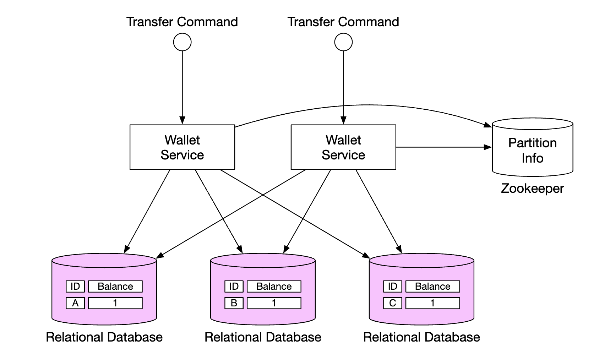
最直接的思路是：在多个分片关系型数据库之上，叠加一个两阶段提交协议。
两阶段提交（Two-Phase Commit，2PC）引入两个角色：
- 协调者（Coordinator）：在我们的场景里就是钱包服务。它负责指挥全局。
- 参与者（Participant）：各个数据库。它们负责执行具体操作。

协议流程：
- 准备阶段（Prepare / Vote）：协调者先在各个数据库上执行读写操作，然后要求所有数据库"准备"这个事务。每个数据库把事务日志写盘、锁住涉及的数据，但先不提交，然后回复"可以（yes）"或"不行（no）"。
- 提交阶段（Commit / Abort）：
- 如果所有数据库都回复 yes，协调者通知所有数据库提交（commit）。
- 只要有一个回复 no（或者超时），协调者通知所有数据库中止（abort）。
2PC 的代价（原文列了两条）：
- 性能差，因为锁竞争（lock contention）。从 Prepare 到 Commit 之间，数据是被锁住的。在高并发下，其他事务只能排队等——而 2PC 的这个窗口里包含了至少一轮网络往返，在高吞吐场景下锁持有时间会被放大成严重的瓶颈。
- 协调者是单点故障（single point of failure）。如果协调者在"已经发出部分 Commit 指令"之后挂了，就会有一些参与者提交了、另一些还在等——数据库进入 in-doubt（结果未定） 状态，可能一直持锁，直到协调者恢复。这期间数据可能不一致。
2PC 什么时候还值得用？ 当参与方少、事务频率低、能容忍秒级延迟时，2PC 依然是可靠且实现简单的选择。传统企业系统里的 XA 事务（MySQL 的 XA、PostgreSQL 的 prepared transactions）就是 2PC 的工业实现。它的问题不是"错"，而是"扛不住高并发"——而我们的目标是 100 万 TPS，所以必须继续往下找。
4. 三阶段提交（3PC）：一个几乎没人用的改良版
原文没有讲 3PC，但它是理解"2PC 为什么阻塞"的最好对照，所以我们在这里补上。
2PC 最大的问题是：参与者在 Prepare 之后、Commit 之前，既不能提交也不能回滚——它必须等协调者的最终指令。这段时间它锁着资源、什么都不干。这叫阻塞（blocking）。
三阶段提交（Three-Phase Commit，3PC） 的思路是：在"准备"和"提交"之间插入一个 PreCommit 阶段，让参与者提前知道"大家大概率都会同意"，从而减少阻塞。
三个阶段：
- CanCommit（询问）：协调者问所有参与者"你们能不能做？"参与者只做一个轻量检查，回复 yes/no。不锁资源。
- PreCommit（预提交）：如果全体 yes，协调者让参与者执行事务并写日志、锁资源（相当于 2PC 的 Prepare）。参与者回复 ACK。
- DoCommit（正式提交）：协调者让参与者提交。
3PC 的两个改进：
- 如果参与者在 PreCommit 阶段超时（没收到协调者的 DoCommit），它可以自行提交——因为它已经知道"大家都通过了 CanCommit"。这打破了 2PC 的永久阻塞。
- 如果参与者在 CanCommit 之后超时，它可以直接中止，不需要等待。
但 3PC 有个致命前提：它假设网络不会分区（no network partition），并且节点只会"崩溃停止"、不会"变慢或发疯"。
为什么工业界基本不用 3PC？ 因为真实网络的**分区（network partition）**是常态，不是例外。一旦发生分区，3PC 会退化得比 2PC 更糟：一部分节点自行提交、另一部分自行中止，直接导致数据不一致。而 2PC 虽然阻塞，但至少不会产生不一致（它宁可停下来等）。 3PC 还多了一轮网络往返，延迟更高。所以它的处境很尴尬：延迟比 2PC 高，正确性比 2PC 弱。 结论：知道 3PC 存在、知道它想解决什么、知道它为什么失败，就足够了。不要在生产系统里用它。
5. TC/C（Try-Confirm/Cancel）：本章的重点
先厘清一个术语混乱
原文把这一节叫 "Distributed transaction using Try-Confirm/Cancel (TC/C)"，并称它是"2PC 协议的一个变体，配合补偿事务工作"。
这里有一个术语问题必须澄清：
业界标准名称是 TCC（Try-Confirm-Cancel）。原文写的 TC/C 和 TCC 是同一个东西，只是写法不同。面试时请用 TCC。
另外，"TCC 是 2PC 的变体"这个说法不够准确。TCC 确实借用了"两个阶段"的结构（第一阶段 Try，第二阶段 Confirm 或 Cancel），但它和 2PC 有一个本质区别：
- 2PC 是一个跨库的事务，参与者在 Prepare 之后锁着资源不提交，等协调者统一裁决。
- TCC 是两个（或更多）独立的本地事务：Try 阶段每个库各自提交一个本地事务；Confirm/Cancel 阶段再各自提交另一个本地事务。
所以 TCC 不依赖数据库的 XA 协议，也不长时间持有数据库锁。它属于**补偿型事务（Compensating Transaction）**家族——和 Saga 是同一族，而不是 2PC 的直系亲属。原文自己也点出了这个关键区别："2PC performs a single transaction, whereas in TC/C, there are two independent transactions."（2PC 执行的是一个事务，而 TC/C 执行的是两个独立的事务。）
TCC 的三个阶段
标准 TCC 的语义是：
| 阶段 | 做什么 | 类比 |
|---|---|---|
| Try | 预留资源——把资源"冻住"，但不动用 | 订酒店时先"锁房"，钱还没付 |
| Confirm | 确认执行——把预留的资源真正扣掉 | 入住时真正付款 |
| Cancel | 取消预留——把冻结的资源释放掉 | 取消订单，释放锁房 |
用一个生活化的类比：你订机票。
- Try：下单占座。座位被标记为"为你保留"，别人订不到了，但航司还没收到钱。
- Confirm：付款成功。座位正式归你。
- Cancel：超时未付款，座位释放，别人可以订。
关键在于 Try 只"冻结"，不"扣减"。 这一点非常容易被搞错，我们用 A 转 100 元给 C 来具体化：
| 阶段 | A 账户 | C 账户 |
|---|---|---|
| Try | 冻结 100（frozen += 100，可用余额 -100） |
什么都不做（或记录一条预留） |
| Confirm | 把冻结的 100 真正扣掉（balance -= 100，frozen -= 100） |
balance += 100 |
| Cancel | 解冻（frozen -= 100，可用余额 +100） |
释放预留（如果有） |
注意 Try 阶段 A 的总资产没有变——钱还在 A 名下，只是从"可用"挪到了"冻结"。这就保证了：在 Try 和 Confirm 之间的任何时刻，钱都不会凭空消失。
原文的 TC/C 用的是另一种变体
原文表格里的 Try 阶段是 A 直接 -$1（真实扣减，不是冻结）：
| Phase | Operation | A | C |
|---|---|---|---|
| 1 | Try | Balance change: -$1 | Do nothing |
| 2 | Confirm | Do nothing | Balance change: +$1 |
| Cancel | Balance change: +$1 | Do Nothing |
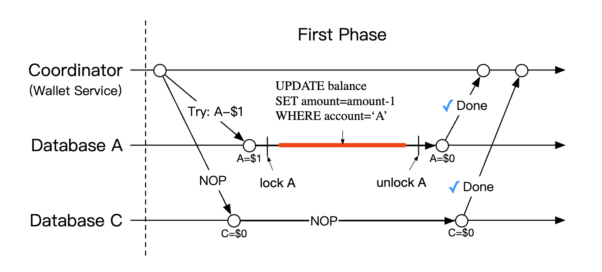
原文的 Try 阶段：协调者在 A 的数据库里开启一个本地事务，把 A 的余额减少 1 元并提交；C 的数据库收到一条 NOP（No Operation，空操作） 指令，什么都不做。
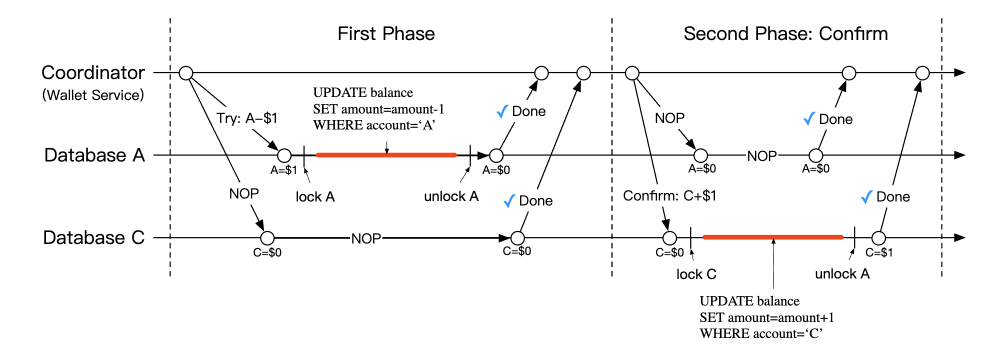
如果两个数据库都回复"yes"，进入 Confirm 阶段：A 收到 NOP，C 的数据库被指示把余额增加 1 元（同样是一个本地事务）。

如果第一阶段有任何操作失败，进入 Cancel 阶段：A 的数据库被指示把余额回补 1 元，C 收到 NOP。
这是"先扣减、后增加"的变体。 它和标准 TCC 的"冻结"语义不同，但同样是一种合法设计。我们对比一下：
| 变体 | Try 做什么 | 优点 | 缺点 |
|---|---|---|---|
| 标准 TCC（冻结） | 冻结资源 | Try 期间钱还在账户名下，语义清晰 | 需要额外的"冻结金额"字段和逻辑 |
| 原文的 TC/C（直接扣减） | 真实扣减 | 实现更简单，且绝不会透支（钱先离开 A） | Try 与 Confirm 之间钱处于"在途"状态，既不在 A 也不在 C |
原文明确选择了后者，理由是**"always executing deductions prior to additions"（永远先执行扣减，再执行增加）**——只要钱先离开 A，就不可能发生"钱还没扣就先花掉"的问题。
但你要理解这个选择的代价：在 Try 和 Confirm 之间，这 100 元处于"悬空"状态。原文专门用一张图说明了这个短暂的"不平衡状态"：
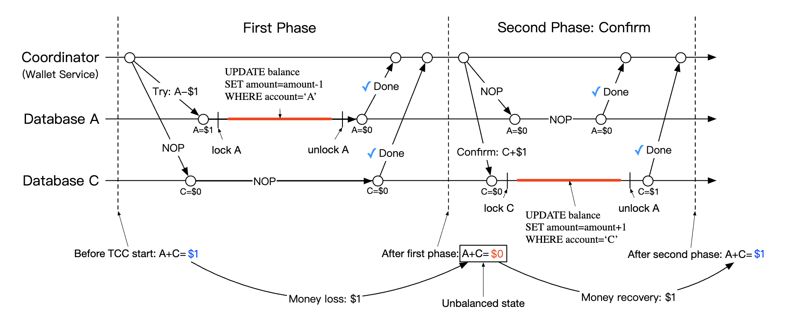
原文说：这没问题，只要我们能从这个状态恢复，并且用户无法使用这笔在途的钱。而"用户无法使用"正是靠"先扣减、后增加"保证的。
原文还用一张表说明了 Try 阶段的选择：
| Try 阶段的选择 | A 账户 | C 账户 | 是否合法 |
|---|---|---|---|
| 选择 1 | -$1 | NOP | 合法 |
| 选择 2 | NOP | +$1 | 非法 |
| 选择 3 | -$1 | +$1 | 非法 |
为什么选择 3 非法？ 原文解释得很清楚：选择 3 需要跨数据库的原子执行——这恰恰是我们不依赖 2PC 就做不到的事。所以 Try 阶段只能动一个账户。
2PC 与 TC/C 的本质对比
原文给了一张非常精炼的对比表，这是本节的核心：
| 第一阶段 | 第二阶段：成功 | 第二阶段：失败 | |
|---|---|---|---|
| 2PC | 事务还没完成（锁着资源，未提交） | 提交/取消所有事务 | 取消所有事务 |
| TC/C | 所有事务已经完成——要么已提交，要么已取消 | 如有需要，执行新的事务 | 逆转已经提交的事务 |
这张表是理解 TCC 的钥匙。 请仔细体会"第一阶段"这一行：
- 2PC 的第一阶段结束时，事务悬而未决——资源被锁，谁也不知道最终结果。
- TCC 的第一阶段结束时，事务已经尘埃落定——A 的钱确实扣掉了，这是一个已提交的事实。所以第二阶段要么"再补一刀"（Confirm，给 C 加钱），要么"把那一刀补回来"（Cancel，给 A 退钱）。
这就是为什么 TCC 不阻塞、性能好：它没有"锁着资源等裁决"的阶段。代价是它把复杂度从数据库层搬到了业务逻辑层。
原文列出的 TCC 的另外两个性质：
- 与数据库无关（database agnostic）：只要数据库支持本地事务就行，不需要 XA。
- 分布式事务的细节和复杂度由业务逻辑承担。
幂等性：TCC 的生命线
在讲失败模式之前，必须先讲透一个概念：幂等性（Idempotency）。
定义：同一个操作执行一次和执行多次，结果相同。
为什么 TCC 必须幂等？因为在分布式系统里，网络超时是常态：
协调者 → Try 请求 → A 的数据库
← 超时，没收到响应（但 A 其实已经执行了！）
协调者 → 重试 Try 请求 → A 的数据库
如果 Try 不幂等，A 就被扣了两次钱。这不是小概率事件，而是分布式系统的日常。
怎么实现幂等？
用一个全局唯一的事务 ID + 一张去重表：
-- Try 阶段，先尝试插入事务记录
INSERT INTO tcc_transactions (transaction_id, status)
VALUES ('01589980-2664-11ec-9621-0242ac130002', 'TRYING');
-- 如果主键冲突，说明这个事务已经处理过了，直接返回上次的结果
-- 如果插入成功，才真正执行冻结/扣减逻辑
关键在于："插入去重记录"和"执行业务操作"必须在同一个本地事务里。这样要么两者都成功，要么都回滚，不会出现"记录了但没执行"或"执行了但没记录"。
一句话记住：TCC 的三个阶段（Try / Confirm / Cancel）都必须幂等。任何一个不幂等，重试就会造成资金错误。这是 TCC 实现中最容易出错、也最致命的地方。
6. TC/C 的失败模式：三个经典难题
TCC 的性能优势是拿"业务复杂度"换来的。这笔账的"利息"，就是三个经典失败模式。原文提到了"failure modes"并给出了"阶段状态表"和"乱序标志"两个机制，但没有系统地把它们讲全。我们在这里讲透。
6.1 协调者中途挂掉：阶段状态表
如果协调者在执行到一半时挂了，它必须能恢复自己的中间状态，否则就不知道"哪些 Try 发出去了、哪些没发出去"。
原文的解法是：维护阶段状态表（phase status tables），在各个数据库分片内原子更新。

这张表包含（原文列出的字段）：
- 分布式事务的 ID 和内容
- Try 阶段的状态：未发送 / 已发送 / 已收到响应
- 第二阶段的名称：Confirm 还是 Cancel
- 第二阶段的状态
- 乱序标志（out-of-order flag）（后面解释）
有了这张表，协调者重启后就能扫描所有处于中间状态的事务，判断该继续 Confirm 还是该 Cancel。
6.2 失败模式一：Confirm 失败了怎么办？
场景：Try 阶段全部成功，进入 Confirm 阶段。协调者通知 A 提交（NOP，无所谓），通知 C 加钱。但 C 的数据库此刻挂了/网络不通。
这时候能回滚吗？不能。
因为 Try 阶段已经提交了 A 的扣款（在原文的变体里），在标准 TCC 里也冻结了资源。这是一个已经发生的事实，没有"回滚"这个选项——你不能把 A 的钱退回去，因为 C 可能其实已经收到钱了（只是响应丢了）。
唯一的出路是：不断重试，直到成功。
Confirm 失败 → 重试 → 失败 → 重试 → 失败 → 重试 → ... → 成功
这意味着两件事：
- Confirm 必须幂等——如果 C 其实已经加过钱了，只是响应丢了，重试不能再加一次。
- 系统必须有可靠的重试机制——通常是把待重试的事务放进一张表，由一个后台任务（定时轮询或消息队列）持续重试，直到明确成功。
这是 TCC 最反直觉的一点：Confirm 阶段没有"失败"这个终态，只有"还没成功"。一旦进入 Confirm，就必须成功。这就是为什么 TCC 要求 Confirm 逻辑尽可能简单、可靠、且绝对幂等——它是一条不能回头的路。
6.3 失败模式二：空回滚（Empty Rollback）
场景：协调者发出了 Try 请求，但请求在网络上丢了（或者协调者在发出 Try 之后、A 执行之前就挂了）。A 从来没有执行过 Try。
随后，协调者（或者恢复流程）判断这个事务失败了，发出 Cancel。
Cancel 到了 A，但 A 根本没 Try 过。 如果 Cancel 的逻辑是"把冻结的钱解冻"，那它会把一个根本没冻结过的账户解冻——凭空给用户加了钱。
正确做法：Cancel 到达时，先检查这个事务 ID 是否存在。
- 如果存在（Try 执行过）→ 正常执行解冻。
- 如果不存在（Try 从没来过）→ 什么都不做，但必须插入一条"已空回滚"的记录。
为什么必须记录？ 因为要防止下一个问题——
6.4 失败模式三：悬挂（Suspension / Hanging）
场景：这是"空回滚"的后续。Cancel 先到了（此时 Try 还没来），Cancel 执行完，什么都没做。然后，那个在网络里迷路了很久的 Try 请求，终于到了。
Try 一看："这个事务我没处理过啊"，于是老老实实冻结了用户的 100 元。
结果：这笔钱被永久冻结。因为 Cancel 已经执行过了（并且被记录为"空回滚"），系统不会再发第二次 Cancel，这个冻结永远不会被解除。这就是悬挂。
原文正是用这张图描述这个问题的：
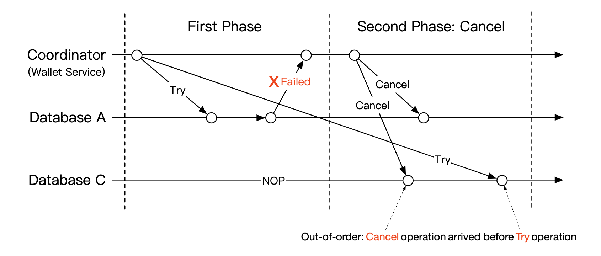
原文的解法是：在阶段状态表里加一个"乱序标志（out-of-order flag）"。当收到 Try 操作时，先检查这个标志是否已置位；如果已置位，直接返回失败，不执行冻结。
这个"乱序标志"，本质上就是空回滚记录。所以两个问题的解法是统一的：
| 问题 | Cancel 先到 | Try 后到 |
|---|---|---|
| 空回滚 | Cancel 发现没有对应 Try → 插入"空回滚"记录，不做事 | — |
| 悬挂 | — | Try 发现已有"空回滚/取消"记录 → 拒绝执行，返回失败 |
一句话记住：空回滚是"Cancel 早到了不能乱动"，悬挂是"Try 晚到了不能乱冻"。 两者的统一解法是用事务 ID 做状态判断 + 阶段状态表持久化。
这三个失败模式（Confirm 必重试、空回滚、悬挂）是 TCC 面试的高频考点。能主动讲出这三个，说明你真的实现过、或者至少认真想过 TCC。
7. Saga（补偿事务）
思路：把大事务拆成一串小事务
Saga 是另一个主流方案，也是微服务架构下实现分布式事务的标准模式。
它的思路很朴素：
- 把一个大事务拆成一串有序的小操作，每个操作在自己的数据库里是独立的本地事务。
- 按顺序从第一个执行到最后一个。
- 任何一步失败，就从这个位置开始，用"补偿操作（compensating operations）"逆序回滚，一直回到起点。

Saga 的出处：这个模式最早由 Hector Garcia-Molina 和 Kenneth Salem 在 1987 年的论文《Sagas》中提出，原本是为了解决"长事务（long-lived transaction）持锁太久"的问题。它比 TCC 更"老"，但直到微服务时代才真正流行起来。
两种协调方式
原文列了两种：
| 方式 | 英文 | 做法 | 优点 | 缺点 |
|---|---|---|---|---|
| 协同式 | Choreography | 每个服务订阅相关事件，自己决定该做什么 | 去中心化，没有单点 | 业务逻辑分散在多个服务里，异步通信，很难追踪和调试 |
| 编排式 | Orchestration | 一个中心协调器按正确顺序指挥所有服务 | 复杂逻辑集中，好维护、好调试 | 协调器可能成为单点（需要自己做高可用） |
原文的结论：协同式的挑战在于业务逻辑被拆散到多个服务、通过异步通信协作；而编排式能很好地处理复杂度，所以在数字钱包系统里通常更受青睐。
TC/C 与 Saga 的对比
原文给了一张对比表，这张表值得逐行读：
| TC/C | Saga | |
|---|---|---|
| 补偿动作在哪 | Cancel 阶段 | 回滚阶段 |
| 中心协调 | 有 | 有（orchestration 模式） |
| 操作执行顺序 | 任意 | 线性 |
| 能否并行执行 | 可以 | 不可以（线性执行） |
| 是否可能看到部分不一致状态 | 是 | 是 |
| 逻辑放在应用层还是数据库层 | 应用层 | 应用层 |
核心差异只有一条：TCC 可以并行，Saga 只能线性。
这条差异直接决定了选型：如果对延迟敏感，选 TCC——因为 TCC 的两个分支（给 A 扣、给 C 加）可以并行发出，而 Saga 必须一步一步来。原文的原话："The main difference is that TC/C is parallelizable, so our decision is based on the latency requirement - if we need to achieve low latency, we should go for the TC/C approach."
但无论选哪个，都还有一件事必须做：原文最后强调——"Regardless of the approach we take, we still need to support auditing and replaying history to recover from failed states."（无论采用哪种方案，我们仍然需要支持审计和历史重放，以便从失败状态中恢复。）
这句话把本章的下半场引出来了：事件溯源。
8. 事件溯源（Event Sourcing）：钱包为什么需要它
从一个审计问题说起
原文说：现实中的数字钱包会被审计，所以我们必须能回答三个问题：
- 任意给定时刻，账户余额是多少？
- 我们怎么知道历史余额和当前余额是正确的？
- 改完代码之后，怎么证明系统逻辑还是对的？
传统做法（一张 accounts 表，存着当前余额）一个都答不上来。因为 UPDATE balance = 850 这个操作是破坏性的——它把旧值覆盖掉了。你只知道"现在是多少"，永远不知道"当时是多少"，更没法验证"这个数字是不是算错了"。
事件溯源（Event Sourcing）就是为回答这三个问题而生的技术。
四个核心概念
事件溯源由四个概念组成（原文的划分）：
① 命令（Command）
来自现实世界的意图，比如"从 A 转 1 元到 B"。
- 命令需要一个全局顺序，所以它们被放进一个 FIFO（先进先出）队列。
- 命令和事件不同，命令是会失败的，也可能包含随机性（比如依赖外部 IO、依赖当前状态是否合法）。
- 一条命令可以产生 0 个或多个事件（比如转账失败就产生 0 个事件）。
- 命令的生成过程可能包含随机性（比如读外部 IO）——这一点后面很关键。
② 事件（Event）
系统内部已经发生的历史事实，比如"已从 A 转出 1 元给 B"。
- 和命令不同，事件是事实——它已经发生了，不会失败，不能被撤销。
- 和命令一样，事件也需要顺序，所以也放进 FIFO 队列。
③ 状态（State）
事件导致的结果。比如一个"账户 → 余额"的键值存储。
④ 状态机（State Machine）
驱动整个事件溯源流程的组件。它主要负责：校验命令、把事件应用到状态上。
- 状态机必须是确定性的（deterministic）——它不应该读外部 IO，也不应该依赖随机数。
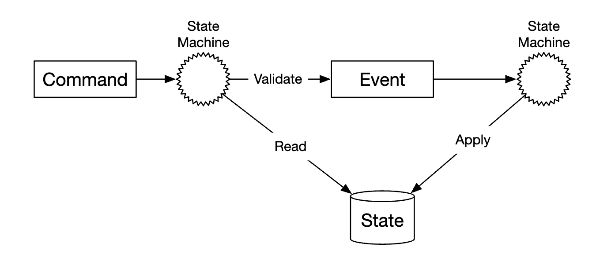
原文还给了一张动态视图，展示命令如何流动成事件、再更新状态：

在钱包里怎么落地
对钱包服务来说，命令就是转账请求。我们可以把它们放进一个 FIFO 队列，比如 Kafka：

完整的流程：
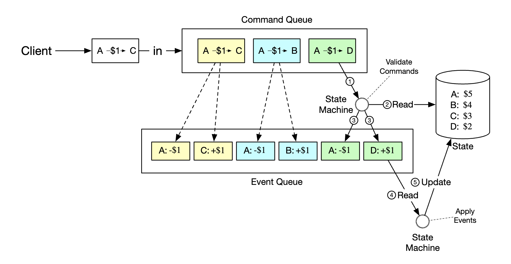
- 状态机从命令队列读取命令；
- 从数据库读取余额状态；
- 校验命令。如果合法，为两个账户各生成一个事件；
- 读取下一个事件并应用它——更新数据库里的余额（状态）。
最大的价值：可重现性（Reproducibility）
原文的原话："The main advantage of using event sourcing is its reproducibility."
在这个设计里，所有状态更新操作都被保存为一份不可变的、包含全部余额变化的历史。
于是：
- 历史余额可以随时通过从头重放事件来重建。
- 因为事件列表不可变、状态机是确定性的，重放任何中间状态都保证会成功。

现在回头看开头的三个审计问题，答案全都出来了（原文的三条回答）：
| 审计问题 | 事件溯源如何回答 |
|---|---|
| 任意时刻的余额是多少？ | 从头重放事件，直到你关心的那个时间点 |
| 怎么知道历史余额和当前余额是正确的？ | 从头重新计算所有事件来验证 |
| 改代码后怎么证明逻辑还是对的？ | 用不同版本的代码跑同一批事件，比对结果是否完全一致 |
第三条是事件溯源的"隐藏超能力"：它让你可以在生产数据上验证代码改动的正确性，而不用等到出事故。这在金融系统里价值极高。
CQRS：解决"查询"的问题
客户端要查余额，不能让每个查询都去重放几百万条事件——太慢了。原文的解法是 CQRS（Command Query Responsibility Segregation，命令查询职责分离）：
可以有多个只读状态机，它们基于那份不可变的事件列表，专门负责查询历史状态。

CQRS 的核心思想是：读和写用两套不同的模型。
- 写模型（命令侧）：接收命令、校验、生成事件、维护权威状态。为了正确性，走的是"重放 + 严格顺序"的路径，慢但准。
- 读模型（查询侧）：订阅事件流，把事件"投影（project）"成方便查询的物化视图（Materialized View）——比如一张
user_id → balance的表，甚至是一张预先算好的报表。快，但不是权威数据源。
为什么非要拆开？因为这两个场景的诉求是矛盾的：
- 写侧要的是正确性和可审计性——必须保留完整事件、严格顺序。
- 读侧要的是低延迟和高吞吐——它只想快速拿到一个数字。
如果硬要用一套模型，你就会陷入两难：要么为了查询性能而牺牲事件的完整性（就退化成普通的余额表了），要么为了事件完整性而让每次查询都慢得不可接受。CQRS 让两边各取所需。
代价：引入了最终一致性（Eventual Consistency）。读模型是异步从事件流更新的，所以用户刚转完账，立刻查余额可能还是旧值。这在钱包场景里是必须正面处理的问题——本章第 11 节会讲怎么解决。
9. 深入设计：高性能事件溯源
前面解决了"正确性"，但我们的目标是 100 万 TPS。原文在这一节讲了一系列性能优化。
优化一：把日志存到本地磁盘
第一个优化：把命令和事件存到本地磁盘存储，而不是 Kafka 这样的外部存储。
好处：
- 省掉网络延迟。写本地磁盘不需要网络往返。
- 只做追加写（append-only）。对磁盘来说，顺序追加是最快的写模式——即使是机械硬盘（HDD）也很快，因为不需要寻道。
优化二：把最近的日志缓存在内存
第二个优化：把最近用到的命令和事件缓存在内存里，省掉从磁盘回读的时间。
实现手段：mmap
在底层，上面两个优化可以用一个系统调用同时实现：mmap（内存映射）。它把本地磁盘上的文件映射到进程的内存空间，于是你既得到了落盘，也得到了内存缓存。
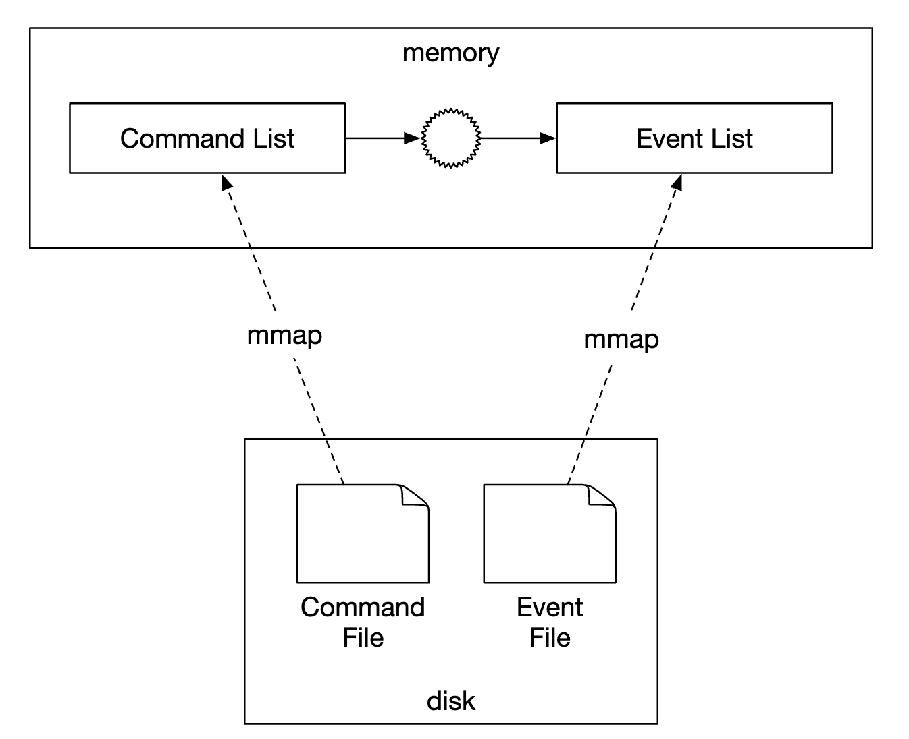
mmap 到底是什么？
mmap是一个 UNIX 系统调用，它把磁盘上的一个文件"映射"到进程的虚拟地址空间。之后你对这段内存的读写，由操作系统自动同步到文件。读的时候如果数据在内存里就直接读（快），不在就触发缺页中断从磁盘加载；写的时候先写内存，内核在后台刷盘。 它之所以快，是因为数据不经过用户态缓冲区，也省掉了read/write系统调用的开销。但要注意：mmap 写入后，数据要真正落盘需要内核刷页（或显式msync），所以"写了 mmap"不等于"已持久化"。对钱包这种场景，关键路径上的持久化点仍然需要明确的fsync语义。
优化三：状态也存本地，用 LSM 树
第三个优化：把状态也存到本地文件系统，用一个文件型本地关系数据库，比如 SQLite。RocksDB 也是一个很好的选择。
原文的选择是 RocksDB，理由是：它使用 LSM 树（Log-Structured Merge-Tree），针对写操作做了优化；读性能则通过缓存来优化。

为什么 LSM 树适合这个场景？ 传统数据库（如 MySQL 的 InnoDB）用的是 B+ 树，更新是"原地修改"——要找到那一页、改它、再写回去，随机写。而 LSM 树把写操作先在内存里攒着（MemTable），攒满了一批顺序追加到一个新文件（SSTable）里，后台再慢慢合并。 事件溯源的工作负载特点是写多、且都是追加——这和 LSM 树的设计完美契合。代价是读会变慢（数据可能分散在多个 SSTable 里，需要层层查找），所以要用缓存来补。原文说"读性能通过缓存优化"，说的就是这个。
优化四：快照（Snapshot）
第四个优化：为了优化可重现性，定期把快照（snapshot）存到磁盘，这样就不必每次都从最开头重放。
快照可以当作大二进制文件，存到 HDFS 这类分布式文件存储里：

快照解决了什么具体问题？ 想象一个跑了三年的钱包，事件列表有 100 亿条。现在要重放，从第 1 条跑到第 100 亿条，可能要跑好几个小时。但如果你在第 99 亿条处存了一个快照，重放就只需要：加载快照（秒级）+ 重放最后 1 亿条。 这是一个时间换空间的经典权衡：快照占存储，但把恢复时间从"小时级"压到"分钟级"。 工程上要注意：快照必须和事件列表的某个**确定位置（offset/sequence）**绑定，否则"快照 + 后续事件"拼不出正确的状态。
10. 可靠的高性能事件溯源：引入复制
一个绕不开的副作用
原文说得很诚实："All the optimizations done so far are great, but they make our service stateful."
前面所有优化（本地磁盘、mmap、RocksDB、快照）都很好，但它们让服务变成了有状态的。有状态就意味着单点——那台机器挂了，数据就没了。所以必须引入复制（replication）。
先想清楚：什么数据需要高可靠？
原文有一段非常精彩的推理，值得完整复述，因为它是"分清主次"的典范：
- 状态和快照 都可以通过重放事件列表重新生成。所以不需要单独保证它们的可靠性——只要事件列表还在，它们随时能重建。
- 有人可能会想："事件列表也能从命令列表重新生成吧？"——这是错的，因为命令是非确定性的（命令可能失败、可能依赖外部 IO）。
- 结论：我们只需要保证事件列表的高可靠性。
这一步推理是本章最重要的思维训练之一。 为什么事件可以从命令重放，但命令不能从命令重放？因为命令是非确定性的——同一条命令，在不同的时间、不同的外部状态下，可能产生不同的事件（甚至失败）。而事件是已经确定的事实，它重放出来的结果永远一样。 这就是为什么"事件列表"必须被持久化、被复制，而"命令列表"不需要——命令一旦被执行，它的"历史使命"就完成了，它的产物（事件）才是真相。
复制事件列表
要保证事件列表的高可靠，需要把它复制到多个节点，并且必须保证两件事（原文）：
- 不丢数据；
- 日志文件内数据的相对顺序，在所有副本之间保持一致。
注意第二条——"顺序一致"和"不丢数据"同样重要。如果两个副本的事件顺序不一样，它们重放出来的状态就会分叉（这是第 28 章"确定性"要展开的核心问题）。
实现手段：共识算法（consensus algorithm），比如 Raft。

Raft 的模型（原文）：
- 有一个 leader（领导者），它是主动的；
- 有若干 follower（跟随者），它们是被动的；
- 如果 leader 挂了，其中一个 follower 会顶上；
- 只要超过半数（majority）的节点存活，系统就能继续运行。
在这个方案里，所有节点都基于事件列表更新自己的状态，而 Raft 保证 leader 和 followers 拥有完全相同的事件列表。
为什么用"超过半数"而不是"全部"？ 因为要求全部节点都确认，只要有一台机器挂了整个系统就停了——可用性太差。而"超过半数"保证了两件事：(1) 任意两个多数派必然有交集，所以新 leader 一定能看到已提交的日志；(2) 容忍少数节点故障。这是**法定人数（Quorum）**思想的经典应用，代价是延迟取决于"多数派中最慢的那个节点"。
11. 分布式事件溯源：分片、CQRS 与实时性
到这里，我们已经做出了一个单节点性能高、且可靠的系统。但它还有两个限制（原文）：
- 单个 Raft 组的容量是有限的。到了一定规模，必须**分片（shard）**数据，并实现分布式事务。
- CQRS 架构下请求/响应流程很慢。客户端必须**定期轮询（poll）**系统，才能知道自己的钱包有没有被更新。
问题：轮询不实时，还会压垮系统
轮询不是实时的，所以用户要过一会儿才能知道余额变了。而且，如果轮询频率太高，会压垮查询服务：
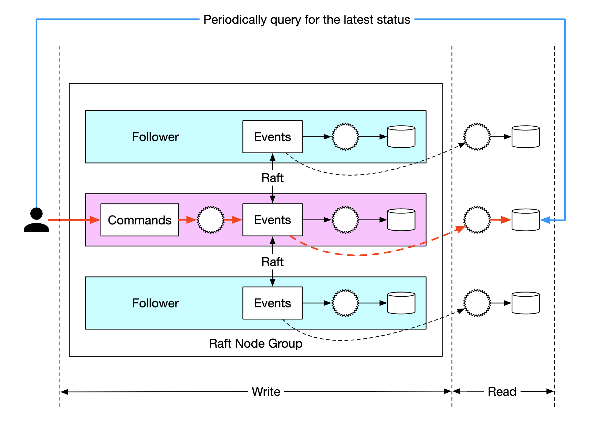
缓解一：反向代理
为了减轻系统负载，可以引入一个反向代理（reverse proxy），它代表用户发送命令，并代表用户轮询响应：
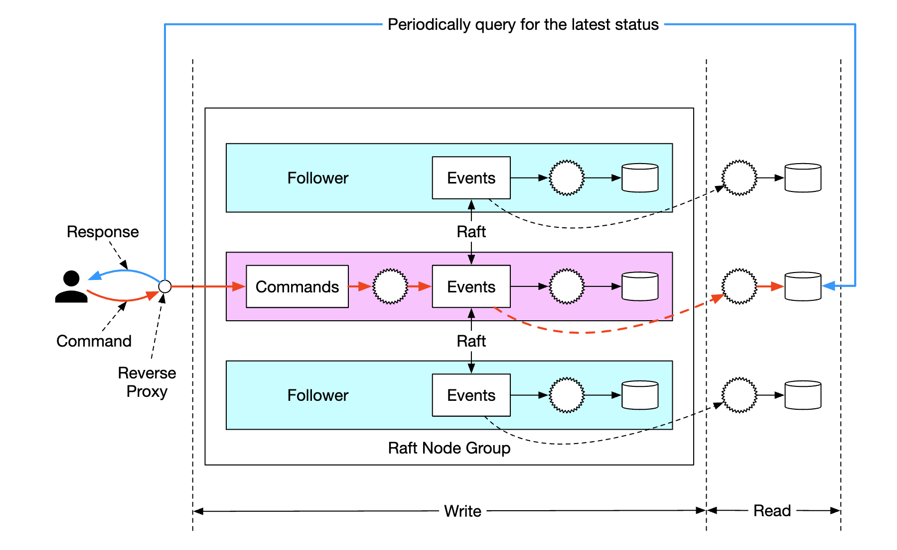
原文说：这能缓解系统负载，因为我们可以用一次请求拉取多个用户的数据，但它仍然没有解决"实时收到结果"的要求。
缓解二：让只读状态机主动推送
最后一个改动：让只读状态机在响应就绪时，主动把结果推回给反向代理。这样用户就会感觉更新是实时的：
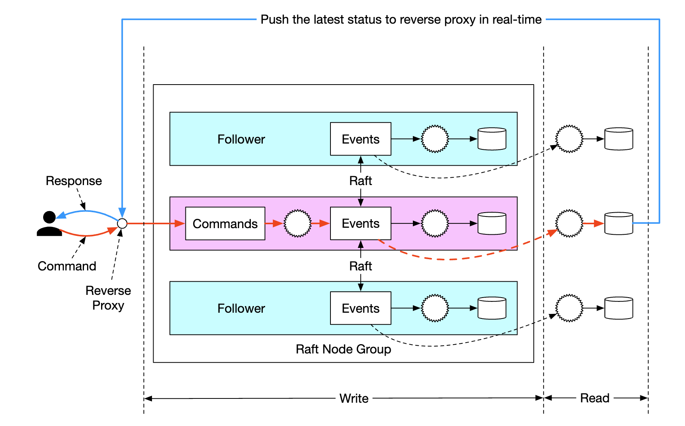
从"轮询"到"推送"，这是一个通用模式。 轮询（polling）的问题是：你要么查得太勤（浪费），要么查得太懒（不实时）。推送（push）把"谁来决定什么时候查"从客户端转移到了服务端——服务端知道什么时候有结果，让它来通知你，天然就是最优时机。 这个思路在工程里反复出现：WebSocket 替代 HTTP 轮询、消息队列的推送消费、CDC（变更数据捕获）等。面试时如果被问到"如何实现实时通知"，从"轮询 vs 推送"的角度切入，是一个很好的回答框架。
最终形态：分片的 Raft 组
要更进一步扩展，就把系统分片成多个 Raft 组，然后在它们之上用**编排器（orchestrator）**通过 TCC 或 Saga 实现分布式事务：

注意这里形成了一个漂亮的闭环：
- 组内（一个 Raft 组内部）用共识算法保证一致性和可靠性；
- 组间（跨 Raft 组）用分布式事务（TCC / Saga）保证原子性。
这就把第 3～7 节讲的分布式事务，和第 10 节讲的 Raft，各用在最适合它的层级上。
一次转账请求的完整生命周期
原文给了最终系统里一次转账的完整生命周期，我们逐条拆解：
- 用户 A 向 Saga 编排器发送一个分布式事务，包含两个操作：
A-1和C+1。 - Saga 编排器在阶段状态表里创建一条记录，用来追踪这个事务的状态。
- 编排器确定需要把命令发到哪些分片（partition）。
- 分片 1 的 Raft leader 收到
A-1命令，校验它，把它转换成一个事件，并在 Raft 组内复制到其他节点。 - 事件结果被同步到只读状态机，状态机把响应推回给编排器。
- 编排器创建一条记录，标明该操作成功，然后继续执行下一个操作
C+1。 - 第二个操作与第一个类似：确定分片 → 发送命令 → 执行 → 只读状态机推回响应。
- 编排器创建一条记录，标明操作 2 也成功了，最后把结果通知客户端。
请把这条链路和前面的知识点对应起来：
- 第 2、6、8 步 → 阶段状态表（第 6.1 节），用于故障恢复；
- 第 3 步 → 分片（第 2 节）；
- 第 4 步 → 确定性校验 + 事件生成 + Raft 复制（第 8、10 节）；
- 第 5、7 步 → CQRS 只读状态机 + 推送（第 8、11 节）；
- 整个 1～8 步的编排 → Saga / TCC（第 5、7 节）。
12. 完整设计回顾
原文的收尾总结了一条清晰的演进路线，我们按"每一步解决了什么、又暴露了什么新问题"来重述：
| 阶段 | 方案 | 解决了什么 | 暴露了什么新问题 |
|---|---|---|---|
| 1 | 内存 Redis | 简单、快 | 不是持久化存储，宕机丢数据；无法原子转账 |
| 2 | 分片关系型数据库 + 分布式事务（2PC / TCC / Saga） | 持久化 + 跨库原子性 | 单库性能扛不住 100 万 TPS |
| 3 | 引入事件溯源 | 所有操作可审计、可重放 | 存到外部数据库和队列，性能不够 |
| 4 | 数据改存本地文件，利用追加写的性能，并用缓存优化读路径 | 单机性能大幅提升 | 服务变成有状态的，不是可靠的（单点） |
| 5 | 引入 Raft 共识 + 复制 | 消除单点故障 | CQRS 的请求/响应流程慢（轮询） |
| 6 | CQRS + 反向代理，代表用户管理事务生命周期 | 减轻轮询负载，接近实时 | 单个 Raft 组容量有限 |
| 7 | 把数据分片到多个 Raft 组，用**分布式事务（TCC / Saga）**编排 | 可水平扩展 | —— |
这张表本身就是一道面试题的答案。 如果面试官问"你怎么设计一个数字钱包"，一个高分回答的结构就是这条演进链：每一步都是被上一步的问题逼出来的。不要一上来就抛出"事件溯源 + Raft + 分片"，那样面试官会认为你在背答案。正确的姿势是：先说最简单的方案，然后自己指出它的问题，再引出改进——这正是原文 Step 1 → Step 4 的叙事方式。
勘误与补充
本节逐条指出原笔记中不准确、过时或缺失的地方。原笔记本章整体质量很高（尤其是事件溯源和 CQRS 部分），但有几处术语、代码和表述需要修正。
勘误 1：TC/C 应写作 TCC，且它不是 2PC 的"变体"
- 原文说法：原文使用
TC/C（Try-Confirm/Cancel），并称它是"a variation of the 2PC protocol"（2PC 协议的一个变体）。 - 问题：
- 术语不规范。业界标准名称是 TCC（Try-Confirm-Cancel）。原文的
TC/C写法在面试和文档中会显得生僻。 - 分类不准确。TCC 确实有"两个阶段"的结构，但它和 2PC 有本质区别，原文自己也指出了："2PC performs a single transaction, whereas in TC/C, there are two independent transactions."（2PC 执行一个事务，TCC 执行两个独立事务）。既然 TCC 的第一阶段就已经提交了本地事务，它就不属于"两阶段提交"这个协议族，而属于**补偿型事务（Compensating Transaction）**族——和 Saga 是同一族。
- 术语不规范。业界标准名称是 TCC（Try-Confirm-Cancel）。原文的
- 正确说法：TCC 是一种基于补偿的分布式事务模式，它借用"两阶段"的形式，但不依赖 XA、不长期持有数据库锁。 它和 2PC 的对比关系应该是"替代方案"，而不是"变体"。
- 延伸：工业界最有影响力的 TCC 实现是蚂蚁金服（现蚂蚁集团）在支付宝体系内发展出来的，开源实现为 Apache Seata（其 TCC 模式）。面试时提到 Seata 会显得你了解工业实践。
勘误 2：分片示例代码存在负数取模的隐患
- 原文说法：
Int myPartition = accountID.hashCode() % partitionNumber; - 问题：Java 的
%运算符对负数操作数返回负结果（这一点和 Python 不同）。String.hashCode()完全可能是负数，例如"polygenelubricants".hashCode()就等于Integer.MIN_VALUE。一旦为负，myPartition就是负数，作为分片下标非法，会导致ArrayIndexOutOfBoundsException或路由到错误节点。 - 正确说法：应使用
Math.floorMod(accountID.hashCode(), partitionNumber)，它能保证结果非负。或者先取绝对值并特殊处理Integer.MIN_VALUE。 - 延伸：这个例子还暴露了一个更大的设计问题——用
% partitionNumber做分片，一旦分片数从 7 变成 8，几乎所有 key 的归属都会改变，等于全量数据迁移。生产环境要么用一致性哈希，要么预先划分远多于物理节点数的逻辑分片（比如 1024 个逻辑分片映射到 8 台物理机，扩容时搬整个逻辑分片即可）。详见第 1 章第 12 节的讨论。
勘误 3："本地磁盘方案不 durable"的表述不准确
- 原文说法：在 Wrap Up 里，原文说 "The previous approach, although performant, wasn't durable. Hence, we introduced Raft consensus with replication to avoid single points of failure."
- 问题：这个表述把持久性（Durability）和可用性/可靠性（Availability / Reliability）混在一起了。第 4 步的方案（本地磁盘 + mmap + RocksDB）在持久性上是合格的——数据确实落到了磁盘，进程崩溃也不会丢。它真正缺的是冗余：那台机器的磁盘坏了，数据就没了。原文紧接着的"to avoid single points of failure"（为了避免单点故障）说的其实是可用性问题。
- 正确说法：第 4 步的短板是没有副本、存在单点故障，因此需要复制。持久性 ≠ 高可用：
- 持久性（Durability）：数据写下去之后，进程崩溃/重启不会丢。
- 可用性（Availability）：系统在部分组件故障时仍能对外服务。
- 可靠性（Reliability）：数据在硬件故障（磁盘损坏）后仍不丢失。
- 延伸：这三个词在面试中经常被混用，而面试官很爱抓这个。一个单机数据库是持久的（进程重启不丢），但不可用（机器挂了就停）也不可靠（磁盘坏了就丢）。加副本同时解决可用性和可靠性，代价是复杂度和写延迟。
补充 1：三阶段提交（3PC）
原笔记完全没有提到 3PC。它是理解"2PC 为什么阻塞"的最好对照，正文第 4 节已完整讲解。记住结论即可：3PC 假设网络不会分区，这个假设在真实网络中不成立，所以工业界基本不用。
补充 2：TC/C 的三种失败模式
原笔记提到了"failure modes"、阶段状态表和乱序标志，但没有把三个经典难题讲全。正文第 6 节补齐了：
- Confirm 失败 → 无法回滚，只能不断重试直到成功（因此 Confirm 必须幂等）；
- 空回滚（Empty Rollback） → Cancel 先于 Try 到达，Cancel 必须记录"已空回滚"而不做实际操作；
- 悬挂（Suspension） → Cancel 先到、Try 后到，Try 必须检查标志并拒绝执行，否则资源被永久冻结。
这三个是 TCC 面试的高频考点。 原笔记只覆盖了第 3 个的一半（乱序标志），前两个完全缺失。
补充 3：幂等性的实现方式
原笔记把 transaction_id 称为"idempotency key"，但没有讲怎么用它实现幂等。正文第 5 节给出了具体做法：用唯一事务 ID 建去重表，把"插入去重记录"和"执行业务操作"放在同一个本地事务里。这是分布式事务实现中最基础、也最容易写错的一环。
补充 4：余额不能为负，并发下如何保证
原笔记没有讨论这个钱包的硬约束。但它极其重要——余额为负就意味着系统在凭空放贷。
有四种常见做法，按推荐程度排列：
① 条件更新（推荐，最简单可靠）
UPDATE accounts
SET balance = balance - 100
WHERE account_id = 'A' AND balance >= 100;
然后检查影响行数：
- 如果
affected_rows == 1，说明扣款成功； - 如果
affected_rows == 0，说明余额不足（或账户不存在），整个事务回滚。
为什么这个方法好？ 因为"检查余额"和"扣减余额"在同一条 SQL、同一个数据库锁的保护下完成，是原子的。不存在"检查时够、扣的时候不够"的窗口（那叫 TOCTOU 问题：Time-Of-Check to Time-Of-Use）。
② 乐观锁（Optimistic Locking）
给账户加一个 version 字段：
UPDATE accounts
SET balance = balance - 100, version = version + 1
WHERE account_id = 'A' AND version = 7;
如果 affected_rows == 0，说明在读取之后有别人改过（版本对不上），重试整个流程。适合冲突少的场景；冲突多时重试会拖垮性能。
③ 悲观锁（Pessimistic Locking）
SELECT balance FROM accounts WHERE account_id = 'A' FOR UPDATE;
先把行锁住，再读、再算、再写。简单，但在高并发下锁竞争严重，而且如果应用层处理不当（比如在锁内做 RPC 调用），会长时间持锁。这就是 2PC 性能差的同一个根源。
④ 数据库约束（最后一道防线）
ALTER TABLE accounts ADD CONSTRAINT chk_balance_non_negative CHECK (balance >= 0);
这个不能作为主要手段，但必须加。它是一道兜底：如果应用层的逻辑有 bug，数据库会直接拒绝，而不是默默地产生负余额。这在资金系统里是标配——永远不要相信应用层的正确性，让数据库守住底线。
TCC 的"冻结"语义恰好天然满足了这条约束：Try 阶段冻结时，可用余额 = 总余额 - 冻结额，冻结额本身就限制了可用余额不能小于 0。这也是为什么标准 TCC 用"冻结"而不是"直接扣减"。
补充 5：对账（Reconciliation）与审计
原笔记在需求澄清里提到了"reconciliation"，但没有展开。对账是资金系统的生命线，必须讲清楚。
什么是对账？ 把系统内部的账目，和外部的权威账目（银行流水、清算所记录）逐笔比对，找出不一致的地方。
为什么要对账？ 因为再好的分布式事务也挡不住所有意外：代码 bug、人工误操作、极端故障场景下的补偿失败。对账是最后一道防线——它假设"系统一定会有错"，并保证"错误一定会被发现"。
对账的层次（从内到外）：
| 层次 | 对什么 | 频率 | 发现什么问题 |
|---|---|---|---|
| 内部一致性 | 所有用户余额之和 vs 事件流累加之和 | 实时/每小时 | 状态机计算错误、事件丢失 |
| 内部账实相符 | 系统记录 vs 冻结/在途资金 | 每小时 | TCC 悬挂、补偿失败 |
| 外部对账 | 系统余额 vs 银行/清算所流水 | T+1（次日） | 资金差错、重复/漏单 |
| 监管报送 | 按监管要求生成报表 | 按周期 | 合规问题 |
对账的核心工具是"双式记账（Double-Entry Bookkeeping）"：每一笔资金变动都记录为借贷两条腿，且所有分录的借贷总和必须为零。这是复式记账法（已有几百年历史）在软件里的直接应用。事件溯源天然适配它——每一个"转账事件"就是一对借贷分录，只要事件流完整，账永远是平的。
发现差异怎么办？ 差异分两类：
- 可自动修复的（比如状态机重算后对上了）→ 自动重算、自动冲正。
- 不可自动修复的（比如真的少了一笔钱）→ 生成差异工单，人工介入。系统绝不能"自动抹平"差异——那是在掩盖问题。
面试加分点：主动提到"对账"，并说清楚"对账只能发现差异、不能定位根因，所以还需要事件溯源来重放定位"，这正好呼应了原文 Step 1 里面试官的那句话。能把"对账"和"事件溯源"的关系讲清楚，说明你理解资金系统的完整闭环。
补充 6：现实参照——100 万 TPS 意味着什么
原笔记设定 100 万 TPS 作为设计目标，没有说明这个数字在现实中的位置。为了避免初学者误以为"支付系统都在这个量级"，这里补充一个参照：
- 真实世界的大型支付系统，峰值在每秒几十万笔的量级（通常是电商大促期间的瞬时峰值，且全年只有几个这样的时刻）。
- 100 万 TPS 已经超过了绝大多数真实支付系统的峰值。
这不是说原笔记错了——系统设计面试本就会刻意放大规模来逼出方案。但你要能区分"设计目标"和"行业常态"。面试时如果主动指出这一点（"我们假设 100 万 TPS，这其实已经超过了现实中主流支付系统的峰值，所以方案要足够激进"），会显得你对行业有感觉，而不是只会背架构。
补充 7：ZooKeeper 之外的配置存储选择
原笔记用 ZooKeeper 存放分片数量和 Redis 节点地址。这在 2010 年代是标准做法，但今天 etcd 和 Consul 更常见——它们更轻量、运维更简单，且 etcd 是 Kubernetes 的底层存储，生态更主流。ZooKeeper 依然可用（Kafka 曾长期依赖它），但它正在被逐步替代（Kafka 从 2.8 起支持 KRaft 模式，不再需要 ZooKeeper）。这不算原笔记的错误，只是时代在变。
常见误区
| 误区 | 为什么错 | 正确理解 |
|---|---|---|
| 跨库转账可以用数据库事务搞定 | 数据库的 ACID 只在单个实例内部成立，跨实例没有任何机制能保证原子性 | 跨库必须用分布式事务方案（2PC / TCC / Saga），没有"免费"的原子性 |
| TCC 就是 2PC | TCC 的第一阶段就提交了本地事务，不长期持锁；2PC 第一阶段锁住资源不提交，等协调者裁决 | TCC 属于补偿型事务族，不是 2PC 的变体。两者的性能和失败模式完全不同 |
| TCC 的 Try 阶段就是扣钱 | 标准 TCC 的 Try 是冻结资源，不是扣减。冻结保证了 Try 与 Confirm 之间钱不会凭空消失 | Try = 预留（冻结），Confirm = 真正扣减，Cancel = 解冻。原文用的是"直接扣减"的变体，代价是出现"在途资金" |
| Confirm 失败了就回滚 | Confirm 阶段已经没有"回滚"这个选项了——Try 已经提交，你无法撤销 | Confirm 必须重试到成功。这就是为什么 Confirm 必须幂等，且必须有可靠的重试机制 |
| 网络超时 = 操作失败 | 超时只说明你没收到响应，操作可能已经成功执行了 | 分布式系统里必须假设"结果未知"，所有操作都要靠幂等 + 重试来处理 |
| 事件溯源就是把操作记日志 | 记日志是"辅助信息"，事件溯源是把事件当作唯一真相来源（source of truth），状态是从事件算出来的 | 事件列表是权威数据，状态表只是物化视图，随时可以从事件重建 |
| 有事件溯源就不需要数据库了 | 重放 100 亿条事件要几个小时，查询根本扛不住 | 必须有 CQRS：写侧保留事件，读侧维护物化视图。两者通过事件流同步，接受最终一致性 |
| 有了分布式事务就不会有资金差错 | 再好的协议也挡不住代码 bug、误操作和极端故障 | 必须有对账作为最后防线。对账负责发现差异，事件溯源负责定位根因 |
余额检查用 SELECT 再 UPDATE 就行 |
在并发下会出现 TOCTOU：检查时余额够，写入时已经被别人花掉了 | 用条件更新（WHERE balance >= amount 并检查影响行数）把检查和扣减合并成原子操作 |
| 100 万 TPS 是支付系统的常态 | 真实大型支付系统的峰值在每秒几十万笔的量级 | 100 万 TPS 是面试用来放大压力的设计目标，不是行业参照 |
面试速记
-
一句话概括：数字钱包的本质是"用分布式事务保证转账的原子性，用事件溯源保证账本的可审计和可重放"，其余所有设计（分片、Raft、CQRS、快照）都是为了在 100 万 TPS 下同时满足这两条。
-
必答要点：
- 跨库没有本地事务，所以必须引入分布式事务；2PC 的问题是锁竞争 + 协调者单点，所以改用 TCC 或 Saga。
- TCC 的三个阶段（Try 冻结 / Confirm 扣减 / Cancel 解冻）都必须幂等，且 Confirm 只能重试不能回滚。
- 事件溯源是钱包的核心：事件列表是唯一真相，状态和快照都可以重建，因此只需要保证事件列表的高可靠。
- Raft 复制事件列表保证不丢数据且顺序一致；跨 Raft 组用 TCC/Saga 编排。
- CQRS 分离读写，用只读状态机 + 推送解决查询性能与实时性问题。
-
加分项：
- 主动讲出 TCC 的三种失败模式（Confirm 必重试、空回滚、悬挂）和统一的解法（阶段状态表 + 事务 ID）。
- 主动区分持久性 / 可用性 / 可靠性，并说明为什么本地磁盘方案"持久但不可靠"。
- 主动提到余额非负用条件更新（
WHERE balance >= amount）保证，并用数据库 CHECK 约束兜底。 - 主动提到对账是最后防线，且对账只能发现差异、事件溯源才能定位根因。
- 主动指出 100 万 TPS 是设计目标而非行业常态。
-
高频追问：
- "为什么不用 2PC 而用 TCC？" → 2PC 在 Prepare 到 Commit 之间锁住资源，高并发下锁竞争是致命瓶颈，且协调者是单点。TCC 把每个阶段拆成独立的本地事务，不长期持锁，且可并行执行，延迟更低。代价是复杂度从数据库层转移到了业务层。
- "TCC 的 Try 阶段已经扣了钱，如果 Confirm 一直失败怎么办？" → Confirm 不能回滚，只能幂等重试直到成功。需要把待重试事务落库，由后台任务持续重试，并配合告警。这也是为什么 Confirm 的逻辑必须尽可能简单、可靠。
- "为什么事件列表必须持久化，命令列表却不用？" → 因为命令是非确定性的（可能失败、可能依赖外部 IO），无法从命令重放出确定的事件；而事件是已确定的事实，重放结果永远一致。所以事件列表是真相来源。
- "用户刚转完账立刻查余额，为什么可能是旧值？" → 因为 CQRS 的读模型是异步从事件流更新的，存在最终一致性窗口。解决方案：写后读走权威状态机、推送替代轮询、或让客户端等待到指定的事件序列号。
- "为什么单个 Raft 组不够，还要分片？" → 单个 Raft 组的吞吐和存储都有上限（所有写都要经过 leader 并复制到多数派）。要突破上限必须分片，而分片之后跨组的原子性又需要分布式事务（TCC/Saga）来保证——于是形成"组内共识、组间补偿"的两层结构。
延伸阅读
- ByteByteGo 系统设计面试课程 — 原笔记的来源
- Martin Fowler：Event Sourcing — 事件溯源的经典定义与讨论
- Martin Fowler：CQRS — CQRS 模式的权威说明
- Garcia-Molina & Salem, "Sagas" (1987) — Saga 模式的原始论文
- Two-phase commit protocol（Wikipedia） — 2PC 与 3PC 的协议细节对比
- Apache Seata — 开源的分布式事务框架，含 TCC 与 Saga 模式实现
- RocksDB — LSM 树存储引擎，本设计中用于本地状态存储
- Raft 共识算法官网 — 含论文、可视化演示和各类语言实现
- etcd — 现代高可用配置存储，ZooKeeper 的主流替代